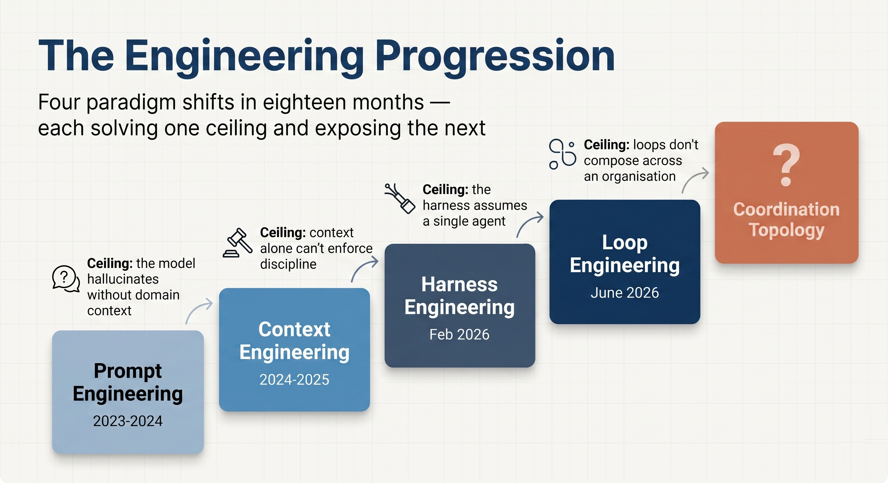
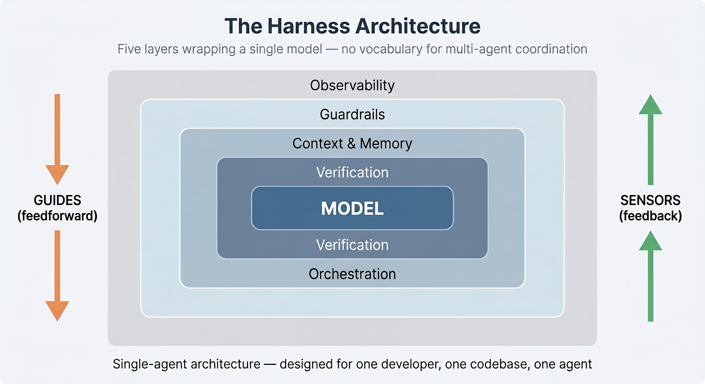
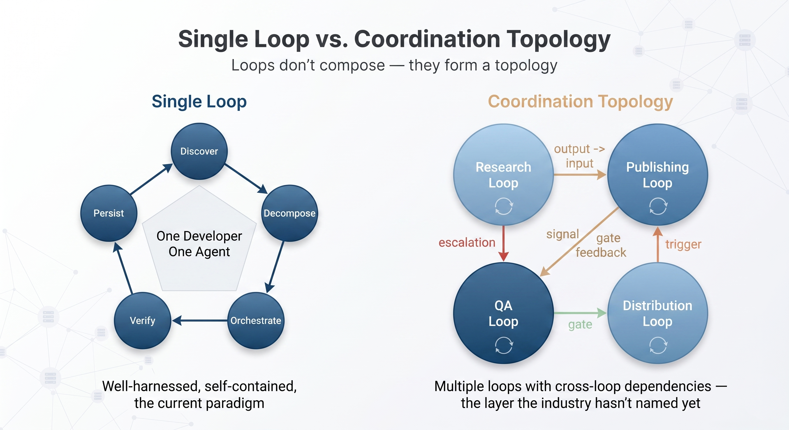

The Reasoning Topology
What sits above the loop — and why the AI engineering conversation is stuck one layer below the ceiling that matters.
The AI engineering discipline has cycled through four named paradigm shifts in eighteen months, each one arriving with enough force to make the previous vocabulary feel quaint before the ink on the blog posts had dried. Prompt engineering gave way to context engineering, which yielded to harness engineering, which is currently being superseded by loop engineering. The speed of this progression tells you less about the field’s confusion or its appetite for naming things (though both are real) than about a structural pattern underneath: each paradigm solved the problem it was designed to solve and, in doing so, exposed a harder problem one layer up that the previous paradigm’s tools couldn’t reach.
There’s a pattern in this progression, and it has a ceiling that the current conversation hasn’t reached yet, because the conversation is still dominated by people building for a single developer and a single codebase.
The Discipline Boundary
In January 2026, Andrej Karpathy published a thread describing his shift from 80% manual coding to 80% agent-driven coding in roughly two months. The thread accumulated over 40,000 reposts, largely because every practitioner who read it recognised the same catalogue of failures in their own work: agents that made silent assumptions without surfacing them, overcomplicated simple solutions with speculative abstractions, and edited adjacent code without authorisation. The problems Karpathy was cataloguing weren’t capability failures in the traditional sense; the agents were brilliant at producing code and equally brilliant at producing the wrong code with the same confidence.
The community’s response was to operationalise these observations into behavioural checklists, chief among them the Karpathy Guidelines, which were published as a CLAUDE.md file that coding agents read at session start. The four principles (state assumptions explicitly, prefer minimal implementations, make surgical changes, define success criteria before writing) crossed 220,000 GitHub stars by May. The insight was that the boundary agents kept failing at wasn’t the intelligence boundary but the discipline boundary, and the fix was architectural: bake the behavioural constraints into the agent’s environment rather than hoping the model would develop judgment it structurally can’t possess.
The observation had a longer reach than the checklist it produced, because Karpathy had surfaced the first serious evidence that the bottleneck in AI-assisted development wasn’t the model at all but everything the model operated inside.

The Harness Response
Six weeks after Karpathy’s thread, two things happened in the same week of February 2026 that gave the next layer its name. Mitchell Hashimoto, the creator of Terraform and Ghostty, described a practice he had developed while working with AI coding agents: every time an agent made a mistake, he would engineer a permanent fix into the agent’s environment so that the specific mistake became structurally impossible to repeat. Six days later, Ryan Lopopolo at OpenAI published a case study in which a small team had shipped a production application with zero manually written lines of code — roughly a million lines generated by Codex agents, 1,500 pull requests merged by three engineers averaging 3.5 PRs per day. The formula Hashimoto gave the field was five words long: Agent = Model + Harness.
The harness, in the vocabulary that rapidly consolidated around this insight, means everything in an AI agent that isn’t the model itself: the context pipelines, the constraint documents, the verification loops, the observability infrastructure, the memory systems, and the tool interfaces that collectively determine whether an intelligent model produces useful work or confident wreckage. Birgitta Böckeler at Thoughtworks structured this into a framework published on Martin Fowler’s site in April, introducing the distinction between guides (feedforward controls that steer the agent before it acts) and sensors (feedback controls that observe after the agent acts and enable self-correction). The framework identified five industry-standard layers: orchestration, verification, context and memory, guardrails, and observability.
The evidence that the harness matters more than the model arrived in the form of a controlled experiment that the field has been quoting ever since. The LangChain engineering team, without changing the underlying model at all, redesigned their coding agent’s harness and climbed from the 30th to the 5th position on Terminal Bench 2.0, improving accuracy from 52.8% to 66.5%. Same brain, different body, radically different results. Faros AI’s 2026 Engineering Report provided the structural explanation for why this mattered: AI-assisted code changes are larger, more complex, and carry wider blast radius than their human-written equivalents, while the surface quality of the code makes errors cognitively expensive to detect during review. The harness is where reliability is won.
The limitation of the harness paradigm, which became visible almost immediately to anyone operating multi-agent systems, is that its entire vocabulary assumes a single agent, a single codebase, and a single developer. The harness has no language for what happens when 40 agents each operate within their own harness and those harnesses need to compose.

The Loop Shift
On June 7, 2026, Peter Steinberger — creator of OpenClaw, then at OpenAI — posted two sentences that accumulated 6.5 million views on X: “Here’s your monthly reminder that you shouldn’t be prompting coding agents anymore. You should be designing loops that prompt your agents.” The same week, Boris Cherny, the head of Claude Code at Anthropic, told interviewers that his job had changed: “I don’t prompt Claude anymore. I have loops running that prompt Claude and figuring out what to do. My job is to write loops.” On the Sunday, Addy Osmani at Google published the essay that gave the pattern its name — “Loop Engineering” — and described a five-part architecture: discovery, task decomposition, orchestration, verification, and persistent memory.
The core observation is that the old workflow, with the human holding the tool the entire time, had been replaced by designing small autonomous control systems that use the agents instead. A loop finds work, assigns it, verifies the result, writes down what happened, and decides the next step, all without the developer sitting at the keyboard. Claude Code shipped the native primitives in the same period: /loop for recurring tasks, /goal for run-until-a-condition-is-met with a separate fast model grading completion so the worker doesn’t grade its own homework, and /schedule for durable cron-style automation.
The shift was real and not, as some of the more jaded commentators suggested, a rebranding of cron jobs. The scheduling layer of a loop is a traditional scheduler, but the decision logic in the middle is categorically different: a cron job runs a fixed script, while a loop runs a model that reads the current state and chooses its next action. The distinction matters because it relocates the bottleneck. In the harness paradigm, the bottleneck was the system around the model. In the loop paradigm, the bottleneck was identified as the human who’d been manually operating that system one turn at a time. Loops remove the human from the execution path and relocate them to the design path.
Osmani, to his credit, included the warning that the discussion he triggered was careful to transmit: an unattended loop without a verifier is a machine that ships bugs with high confidence. Token costs in autonomous agent loops compound faster than almost any developer expects. And there’s what he called comprehension debt, the gap that widens when a system ships code you never read.
The Unnamed Ceiling
Loop engineering is the right abstraction for a single developer orchestrating a single autonomous workflow. The question that it doesn’t answer, because the question doesn’t arise in the single-developer context that dominates the current conversation, is what happens when loops interact.
Consider a production environment where a content research loop discovers opportunities, feeds its output into a publishing loop, which triggers a distribution loop, which generates performance signals that feed back into the research loop. Each of these is a well-harnessed, goal-conditioned loop running autonomously. Each has its own verification sub-agent, its own memory, its own scheduling. By every measure the current paradigm cares about, each loop is well-engineered.
The system’s behaviour, though, depends less on how well each loop is engineered than on the relationships between loops: which loop’s output constrains which other loop’s input, what happens when two loops produce contradictory signals about the same resource, and how the collective behaviour of the system changes when a loop that used to run daily starts running hourly. These are coordination problems, and the coordination layer sits above any individual loop the way a loop sits above any individual prompt.

Three problems emerge at organisational scale that none of the existing layers address.
The first is inter-agent dependency management. When a system contains dozens of specialist agents organised into multiple autonomous loops, the output of one agent routinely constrains the input of another. In a well-designed system, these dependencies are explicit and directional; in most systems, they’re implicit and discovered only when something breaks three loops downstream from the original error. The harness framework has no concept of cross-agent dependencies because it was designed for a single agent. The loop framework has no concept of cross-loop dependencies because it was designed for a single loop. The dependency graph of a multi-agent production system is a coordination topology, and managing it is an architectural discipline that the field hasn’t yet named because the field hasn’t yet needed to name it at scale.
The second is human-judgment boundary placement. In a single-agent system, the boundary between autonomous operation and human decision-making is simple: the human reviews the output. In a single loop, it’s more complex but still tractable: the human designs the loop and reviews aggregate results. In a multi-loop system operating across an entire organisation’s functions, the question of where autonomous operation stops and human judgment begins graduates from a per-loop decision into a system-wide design problem that must account for the interactions between loops, the cascading consequences of autonomous decisions, and the practical reality that humans can’t review the output of 40 agents running across 12 loops any more than they can personally review every line of code those agents produce. The boundary must be placed architecturally, with clear escalation paths that route specific categories of uncertainty to human decision-makers without requiring those decision-makers to understand the internal state of every loop in the system.
The third is collective intelligence. Every paradigm from prompt engineering to loop engineering treats improvement as a per-agent or per-loop concern: make this agent better, make this loop more reliable. In a multi-agent production system, the more interesting question is whether the system’s aggregate behaviour improves over time, whether the lessons learned by one loop propagate to others, whether the system compounds instead of just executing, and whether the collective output is more than the sum of its parts. The problem is architectural rather than statistical in the machine-learning sense — it concerns how state flows between components and how feedback from one part of the system informs the behaviour of others.
What a Topology Looks Like in Practice
The reason I can describe these three problems with specificity rather than speculation is that I have been operating a multi-agent production system across an entire company’s functions for the past year. The system coordinates composable skills, function-specific agents, autonomous workflows with schedule-conditioned orchestration, and an intelligence layer that governs cross-agent state. It runs prospect research, content production, quality assurance, executive intelligence, and operational automation as an integrated architecture where the output of one workflow feeds the input of the next, rather than as separate tools that happen to share a server.
Every lesson in this article was learned by hitting a ceiling and building through it. The harness framework describes five layers; a production multi-agent system operating across a company’s functions contains all five and encounters a sixth that the framework has no vocabulary for. The loop paradigm correctly identifies that the human should design loops rather than operate agents manually; what it doesn’t yet account for is that 12 well-designed loops running simultaneously will produce coordination failures that have nothing to do with how well each individual loop is engineered.
The coordination topology is the layer that governs three questions simultaneously: which agent’s output constrains which other agent’s input, where the boundary sits between autonomous execution and human judgment, and how the system’s collective intelligence compounds over time. It doesn’t have a name in the industry yet, because the industry is still building for the single-developer, single-codebase case where the question doesn’t arise.
It will have a name within a year. The teams that figure it out first will have an architectural advantage that is difficult to replicate, because the lessons of coordination topology are learned in production under load, not in design documents or conference talks.
If you are building multi-agent AI systems — or beginning to think about what coordination looks like at organisational scale — I would welcome a conversation. tawhid@softograph.com
Sources
Karpathy, X thread (January 26, 2026). Hashimoto, personal blog (February 2026). Lopopolo, OpenAI (February 11, 2026). Böckeler, “Harness engineering for coding agent users,” martinfowler.com (April 2, 2026). Faros AI, “AI Engineering Report 2026.” LangChain, Terminal Bench 2.0 results (March 2026). Steinberger, X post (June 7, 2026). Cherny, CNBC/Business Insider interview (June 2026). Osmani, “Loop Engineering,” addyosmani.com (June 2026). Claude Code documentation, Anthropic.